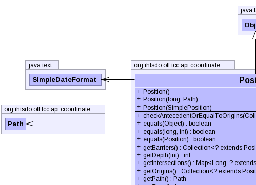
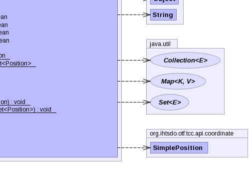

- java.lang.Object
-
- org.ihtsdo.otf.tcc.api.coordinate.Position
-
- All Implemented Interfaces:
- Externalizable, Serializable
public class Position extends Object implements Externalizable
- See Also:
- Serialized Form
-
 

-
-
Constructor Summary
Constructors Constructor and Description Position()No arg constructor for JAXBPosition(long time, Path path)Position(SimplePosition another)
-
Method Summary
-
-
-
Constructor Detail
-
Position
public Position()
No arg constructor for JAXB
-
Position
public Position(SimplePosition another)
-
Position
public Position(long time, Path path)
-
-
Method Detail
-
writeExternal
public void writeExternal(ObjectOutput out) throws IOException
- Specified by:
writeExternalin interfaceExternalizable- Throws:
IOException
-
readExternal
public void readExternal(ObjectInput in) throws IOException, ClassNotFoundException
- Specified by:
readExternalin interfaceExternalizable- Throws:
IOExceptionClassNotFoundException
-
checkAntecedentOrEqualToOrigins
public boolean checkAntecedentOrEqualToOrigins(Collection<? extends Position> origins)
-
equals
public boolean equals(Position another)
-
equals
public boolean equals(long time, int pathId)
-
readPosition
public static Position readPosition(ObjectInputStream in) throws IOException, ClassNotFoundException
- Throws:
IOExceptionClassNotFoundException
-
readPositionSet
public static Set<Position> readPositionSet(ObjectInputStream in) throws IOException, ClassNotFoundException
- Throws:
IOExceptionClassNotFoundException
-
writePosition
public static void writePosition(ObjectOutputStream out, Position p) throws IOException
- Throws:
IOException
-
writePositionSet
public static void writePositionSet(ObjectOutputStream out, Set<Position> viewPositions) throws IOException
- Throws:
IOException
-
getOrigins
public Collection<? extends Position> getOrigins()
-
getDepth
public int getDepth(int pathId)
-
getPath
public Path getPath()
-
setPath
public void setPath(Path path)
To support jaxb unmarshalling.- Parameters:
path-
-
getTime
public long getTime()
-
setTime
public void setTime(long time)
To support jaxb unmarshalling.- Parameters:
time-
-
isAntecedentOrEqualTo
public boolean isAntecedentOrEqualTo(Position another)
-
isAntecedentOrEqualTo
public boolean isAntecedentOrEqualTo(long time, int pathId)
-
isSubsequentOrEqualTo
public boolean isSubsequentOrEqualTo(Position another)
-
isSubsequentOrEqualTo
public boolean isSubsequentOrEqualTo(long time, int pathId)
-
getBarriers
public Collection<? extends Position> getBarriers()
-
-